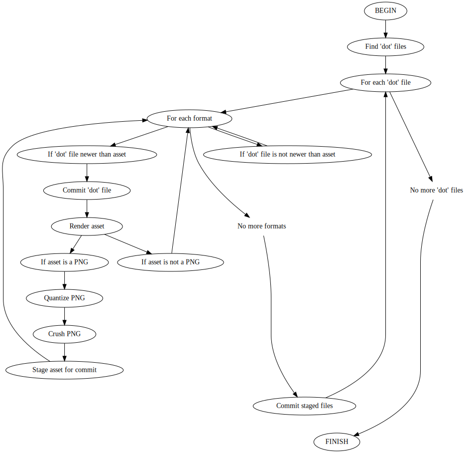

Asset regeneration script
So, in the interest of trying to be lazy (really!), I wrote a script to automate the generation of graphic assets from the dot source files. It does a few things for me:
- It only generates files that have been updated (with similar behavior to
make; it only updates assets if the source file is newer than the asset). - It generates both PNG and SVG files (and could generate any format
dotsupports). - It quantizes and crushes PNG assets, drastically reducing file size.
- It commits modified source files to avoid losing work (a generated asset is a conscious effort. I presume it represents a significant change in the source.)
- It commits generated assets.
- It saves me manually typing the
dotcommands or relying on shell history to keep them.
Workflow¶

Here's how it works:
- Find all
dotfiles in myassetsfolder. - For each
dotfile- For each format (I specify SVG and PNG)
- Check to see if the
dotfile is newer than the corresponding PNG or SVG.- If it's newer:
- Commit the
dotfile to thegitrepository, in case the work-in-progress hasn't been committed already. - Render the asset
- If the asset is a PNG:
- Force the PNG into indexed RGBA mode using
pngquant; for many images, this grossly reduces the PNG file size. - Run
pngcrushon the indexed PNG, trying all strategies that use the maximum Zlib compression. For PNG images whichpngquantdidn't make a significant file size dent in, this will.
- Force the PNG into indexed RGBA mode using
- Stage the asset for commit.
- Commit the
- If it's newer:
- Check to see if the
- If there are changes staged for commit, commit them.
- For each format (I specify SVG and PNG)
Source¶
#!/bin/bash
fmts="svg png"
banned_branches="master regen-assets"
current_branch=$(git branch -l | grep -e '^*' | cut -d' ' -f2)
for b in ${banned_branches} ; do
if [[ "${current_branch}" == "${b}" ]]; then
echo "Not regenerating assets. ${b} is a protected branch."
exit 1
fi
done
git_status=$(git status)
if echo "${git_status}" | grep "Changes to be committed" > /dev/null ; then
echo "Not regenerating assets. You have staged, uncommitted changes."
exit 1
fi
while IFS= read -r -d '' dotfile ; do
assetdir=$(dirname "${dotfile}")
assetname=$(basename "${assetdir}")
echo "Generating renders for $(basename ${assetdir})"
for fmt in ${fmts} ; do
dstfile="${assetdir}/${assetname}.${fmt}"
if [[ "${dotfile}" -nt "${dstfile}" ]] ; then
echo "${dotfile} has been updated. Committing $dotfile"
git commit --quiet -m "Caught uncommited changes to ${assetname}. Preserving separately." "${dotfile}"
echo "Building ${fmt} for $(basename ${assetdir})"
dot "-T${fmt}" -o "${assetdir}/${assetname}.${fmt}" "${dotfile}"
if [[ $fmt == "png" ]] ; then
orig_size=$(stat -c %s "${dstfile}")
pngquant --force --ext .png -Q 100-100 "${dstfile}"
quant_size=$(stat -c %s "${dstfile}")
pngcrush -ow -brute -l 9 -q "${dstfile}"
crushed_size=$(stat -c %s "${dstfile}")
echo "Original: ${orig_size}b. Quantized: ${quant_size}b. Crushed: ${crushed_size}"
fi
echo "Adding ${dstfile}"
git add "${dstfile}"
fi
echo "checking for changes"
if git status | grep "Changes to be committed" > /dev/null ; then
echo "Committing changes for ${assetname}"
git commit --quiet -m "Preserving binary renders for ${assetname}"
fi
done
done < <(find assets -type f -name '*.dot' -print0)
Pretty handy. We'll have to see how automating munging of my git repo works out, but I think there's going to be more value in automating it than is lost digging through some strange git history. At least the visual renders will accompany the various versions of the dotfiles, so understanding the impacts of changes will be easier, and I'll have snapshots of works-in-progress to go back to illustrate _why__ I took one approach or another while demonstrating more about Dot and Graphviz.